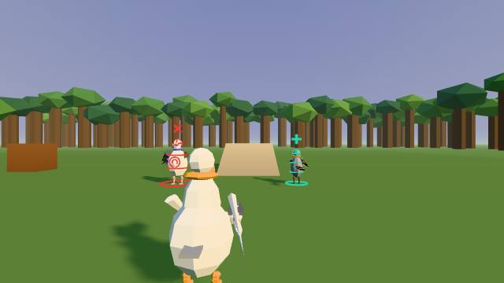
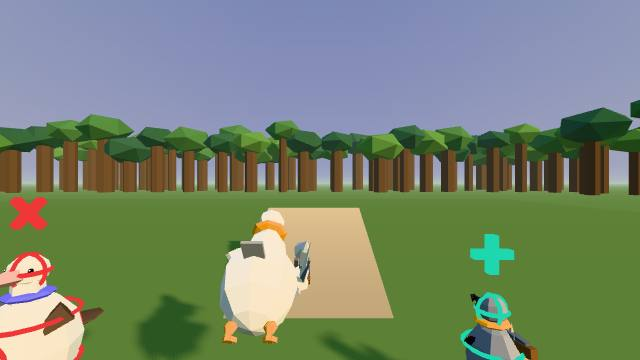

Pelican Playable
Gun carry · Playable since Stage 3
Appearance: bottom-heavy pear shape; a long bill with a huge sagging throat pouch that swings as it walks; short legs; a gatling slung at the hip. White body, grey wing edges, yellow-orange pouch. Reads as "pear with a hanging bag under the bill".
How to play
Gun carries win fights with their weapon. They want a clear line of sight, steady aim at the head for beak shots, and the items that make the gun stronger (the Talon column). Stay behind your tanks and let the gun do the work.
Pelican fights with the Gullet Gatling, which hits instantly. Damage drops off between 18 m and 40 m, and head hits are beak shots worth ×1.65. Every level above 1 is a Molt: +38 max HP per level; +4% gun damage of base per level; +1 Song power per level; +3 melee damage per level.
Gulp a fledgling to refill health, or a hero to remove them from the fight. Switch on Feeding Frenzy as your gun starts running dry and fire in short bursts at range.
Abilities
Four abilities. Slots 1 to 3 unlock at level 1, the ultimate at level 6. Each can be upgraded three times, for 1, 2, 5 AP, in order; see Ability Points. The shortest cooldown in the kit is Belly Flop at 14 s.

1. Gulp
Grab the first enemy hero or fledgling in a 4 m cone. A fledgling is swallowed (your last hit, its pod at your feet) and heals you 60. A hero is carried 1 s (stunned, intangible) at 80% of your speed, then spat 10 m along your aim for 70 + 0.7×SP Song damage.
- Tier 1 · 1 APSpit damage +30 (100 + 0.7×SP) damage +30
- Tier 2 · 2 AP-5 s cooldown cooldown -5 s
- Tier 3 · 5 APThe spat hero is stunned 0.75 s on landing land stun +0.75

2. Feeding Frenzy
Instantly reload. For 6 s you fire 35% faster and heal 15% of the Talon damage you deal.
- Tier 1 · 1 APLasts +2 s (8 s) duration +2
- Tier 2 · 2 APFire rate +15% (50%)
- Tier 3 · 5 APEach gun hit on a hero shreds 2% Talon resist for 6 s (up to 5 stacks)

3. Belly Flop
Leap to a point within 10 m. The landing deals 70 + 0.7×SP Song damage in 5 m, knocks enemies back 4 m and slows them 30% for 2 s.
- Tier 1 · 1 APLanding radius +1.5 m (6.5 m) radius +1.5
- Tier 2 · 2 AP-4 s cooldown cooldown -4 s
- Tier 3 · 5 AP2 charges +1 charge
4. Bottomless Pouch
For 8 s your shots use no ammo and deal +30% damage, and every bullet splashes 1.5 m for 35% of its damage (splash cannot beak-shot).
- Tier 1 · 1 APLasts +3 s (11 s) duration +3
- Tier 2 · 2 APGun damage +15% (+45%)
- Tier 3 · 5 APYou heal 20% of the Talon damage you deal while it lasts
Since Stage 3. See all heroes.